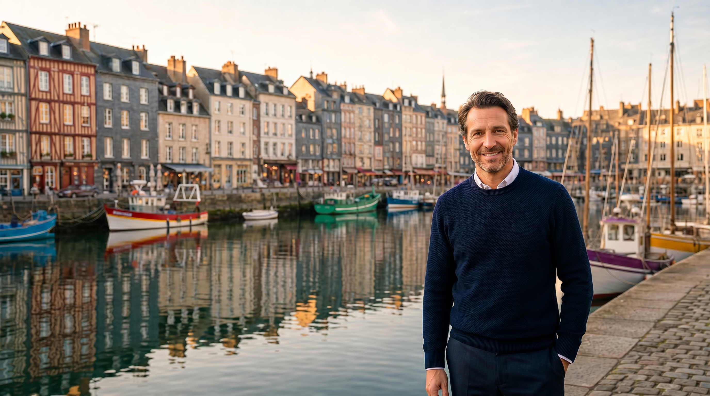
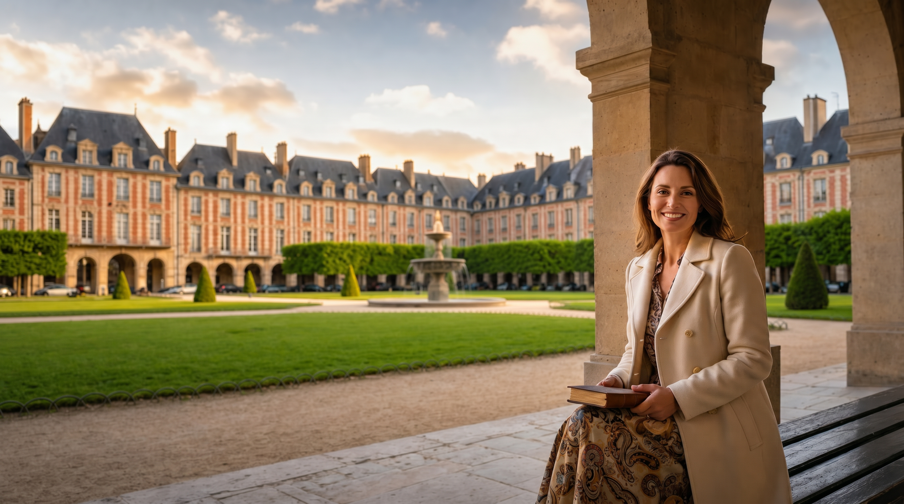

Live small groups
Just 8–10 learners, so every learner speaks every lesson. No hiding, no passive video — a real, social classroom led live from France.
French Atelier · Course 2 of 4
You can already say bonjour — now learn to truly interact. From Étretat's chalk cliffs to the gilded halls of Versailles, twenty live lessons give you the autonomy to talk about your life, your family and your tastes.
Presented by Acadomia · France's #1 private learning institute, founded 1989
What you'll gain
From the Normandy coast inland to Paris and Versailles.
Loved by learners worldwide
“Going from Étretat to Versailles in the syllabus made the grammar feel like a journey, not a slog.”
“I can finally talk about my family and my day. Caitlin's classes are warm and the pace is perfect.”
“The market unit was so practical — I used it the next month in Lyon and the vendor smiled.”
“Real autonomy is the right phrase. I no longer rehearse every sentence in my head before speaking.”
“Honfleur, where Champlain sailed for Québec — as a Canadian that unit gave me chills.”
“Eight to ten people means everyone speaks. You can't hide, and that's exactly why it works.”
“Going from Étretat to Versailles in the syllabus made the grammar feel like a journey, not a slog.”
“I can finally talk about my family and my day. Caitlin's classes are warm and the pace is perfect.”
“The market unit was so practical — I used it the next month in Lyon and the vendor smiled.”
“Real autonomy is the right phrase. I no longer rehearse every sentence in my head before speaking.”
“Honfleur, where Champlain sailed for Québec — as a Canadian that unit gave me chills.”
“Eight to ten people means everyone speaks. You can't hide, and that's exactly why it works.”
Why FA Beginner
Just 8–10 learners, so every learner speaks every lesson. No hiding, no passive video — a real, social classroom led live from France.
Each unit is anchored in a real French place along the Normandy → Paris & Versailles journey, so language attaches to a scene you can picture.
Learn from native French teachers, certified and broadcasting live from cities across France — Paris, Lyon, Nice, Strasbourg and beyond.
Between live lessons, Juliane — our AI French tutor — is always on to practise, answer questions and keep you moving.
Finish at CEFR A1.2 with a certificate of achievement issued by Acadomia, France's #1 private learning institute — recognised against the standards used across French academia.
20 live lessons · CEFR A1.1 → A1.2 · certificate by Acadomia · a $100 learning credit on completion.
The French Atelier difference
You learn French in the street, at the counter, on the quay — anchored to real places, so it stays.
Small groups of 8–10 learners with a native teacher — social, accountable, and genuinely human.
Every lesson carries the gestures, codes and stories of French life — you don't just speak French, you understand it.


An education advisor will place you precisely and build a plan around your schedule — in minutes, with no pressure.
Meet your teachers

French-American teacher who bridges two cultures in every class — warm, precise, and endlessly patient with first words.

Franco-Canadian teacher from sunny Montpellier — energetic, encouraging, and a specialist in unlocking the shy.

Lyon-based teacher with a gastronome's love of nuance, drawing learners into the rhythm of real French speech.

Parisian content creator who turns the city's everyday rituals into living lessons your phone could never teach.

Fifteen-plus years teaching abroad, now broadcasting live from West Paris with infectious cultural curiosity.

Niçois teacher who brings Mediterranean ease to grammar, making even the subjunctive feel like a coastal stroll.
French-American teacher who bridges two cultures in every class — warm, precise, and endlessly patient with first words. As Head of School for FA Beginner, Caitlin sets the tone for every cohort and personally reviews each learner's progress.
Meet an advisor before you enrol. We'll confirm your level, walk you through the schedule, and answer every question — no commitment.
The full syllabus
FA Beginner travels from the Belle Époque promenade of Cabourg and the chalk cliffs of Étretat — beloved of Monet and Maupassant — through the half-timbered streets of Rouen and Honfleur (where Champlain set sail for Québec), then inland to the Palace of Versailles and the living quarters of Paris.
On Cabourg's Belle Époque seafront you reactivate greetings and learn to locate yourself and others with il y a and prepositions of place. You describe a scene in front of you simply. The can-do: say where things and people are.
Among Rouen's half-timbered streets you ask and give directions with more detail, naming shops and landmarks. You handle a short street exchange with a passer-by. The outcome: navigate a French town centre by asking.
In the painters' port of Honfleur — from which Champlain sailed for Québec — you talk about origins and journeys with venir de and aller à. You connect place, history and your own travels. You can now narrate where you've come from and where you're going.
On the Deauville boardwalks you introduce your family using possessive adjectives and the verb avoir, describing relationships and ages. You leave able to talk about the people closest to you.
Before the chalk cliffs of Étretat — Monet's subject, Maupassant's home — you describe physical appearance and character with adjectives that agree. You sketch a person in a few sentences. The can-do: describe what someone looks like and is like.
Still on the Normandy coast you discuss the weather and the seasons, using il fait and il y a with weather expressions. You link weather to plans. You can now talk about and react to the weather.
At the Palace of Versailles you buy tickets, follow a simple guided route, and ask questions about what you see. You handle the full logistics of a cultural visit. The outcome: manage a museum or monument outing in French.
In the gardens of Versailles you describe a place — its size, its features, your impression — using c'est and il y a with qualifying adjectives. You leave able to describe a space and your feelings about it.
On the Place de la Contrescarpe during a Bastille Day celebration you talk about festivities, invite someone, and accept or decline, exploring French public holidays. You can now navigate a social event and its invitations.
In the Jardin des Plantes you talk about leisure and routine with the present tense of regular verbs, describing what you usually do. The can-do: describe a typical day or pastime.
Walking the Seine quays you express likes and dislikes with aimer, adorer, détester, and justify them simply. You compare your tastes with a partner. You can now talk about preferences and give a reason.
In the elegant Place des Vosges you make and respond to simple suggestions, proposing an activity and arranging to meet. You leave able to organise a small outing with a friend.
Inside the Musée Carnavalet you talk about the past in the simplest way, describing what a place used to be and reacting to history. The outcome: understand and give basic information about the past.
In a Marais café you order a full meal, ask about dishes, and handle the bill with growing fluency, building on Foundation's ordering skills. You can now manage a relaxed café meal with choices.
At La Cinémathèque you talk about films and tastes, propose a screening, and agree on a choice, using vouloir and pouvoir. The can-do: organise an evening out around a shared interest.
Beneath the frescoes of Le Train Bleu at the Gare de Lyon you handle a more formal meal — booking, ordering courses, and making polite requests. You leave able to dine in a smarter setting.
At the lively Marché d'Aligre you buy fresh produce by weight and quantity, ask prices, and bargain gently, mastering quantities and partitive articles. The outcome: do your shopping at a French market.
You narrate your day in sequence using d'abord, ensuite, après, linking several simple actions. You can now tell a short, ordered account of what you did.
You talk about near-future plans with aller + infinitif, describing what you intend to do this week. The can-do: state your plans and intentions clearly.
Your final unit chains everything into one complete outing: locate, invite, travel, visit, order and recount — a best-of review proving you can now act with real autonomy across a French day.
Questions & answers
Including how it works, the certificate, and what it costs.
FA Beginner is built for learners at CEFR A1.1 entering at A1.1 and finishing around A1.2. It assumes you've reached the level just below and want to consolidate and grow. Lessons are live, in small groups, and led by native certified teachers broadcasting from France.
You attend 20 live 85 min sessions in groups of 8–10 learners. Every unit is a real communicative task anchored in a real French location, so the language attaches to a place and a purpose. Recordings are available so you never miss a step.
Yes. On completion you receive a CEFR-aligned certificate of achievement issued by Acadomia, France's #1 private learning institute. Our framework follows the same Common European levels recognised across French academia and employers — the standard of reference used by institutions including the Sorbonne.
The French Atelier is presented by Acadomia — founded in 1989 and France's #1 private learning institute — in partnership with the eTeacher award-winning live online learning platform. You learn from native, certified French teachers, supported around the clock by Juliane, our 24/7 AI tutor.
Absolutely. An education advisor will help you place into the right course and build a plan around your schedule and goals.
FA courses run from $42 a week on the annual plan — $840 in total for all 20 live lessons — or pay monthly from $56 a week. Pricing is always discussed with your advisor so it fits your situation — there are no hidden fees, and a $100 learning credit is available on completion.
Speak to an advisor today and reserve your seat in the next live cohort.